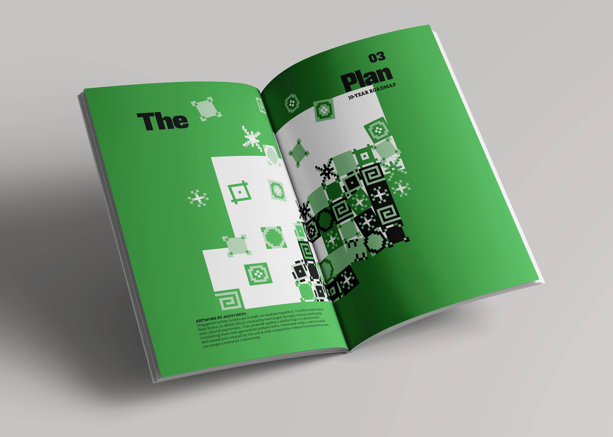
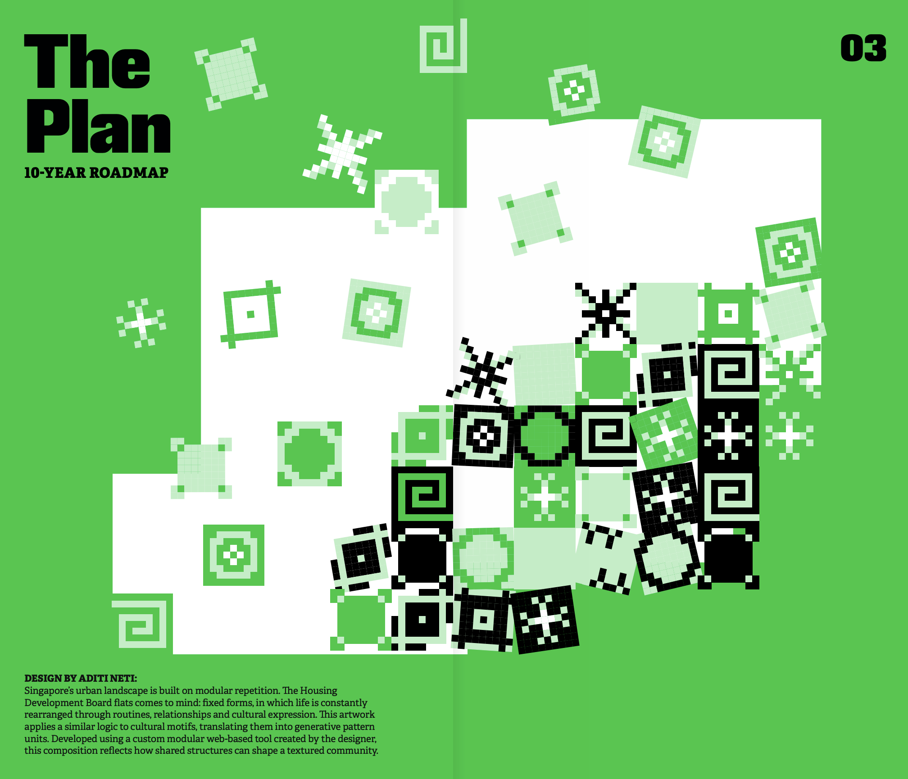
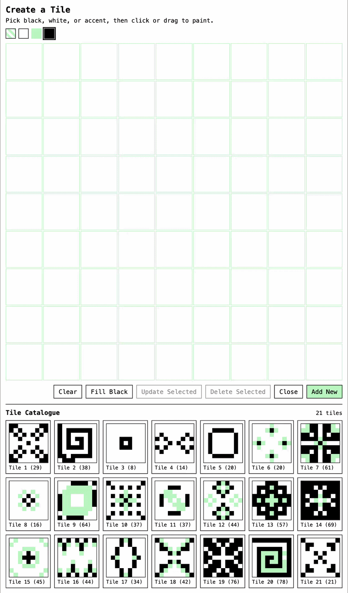
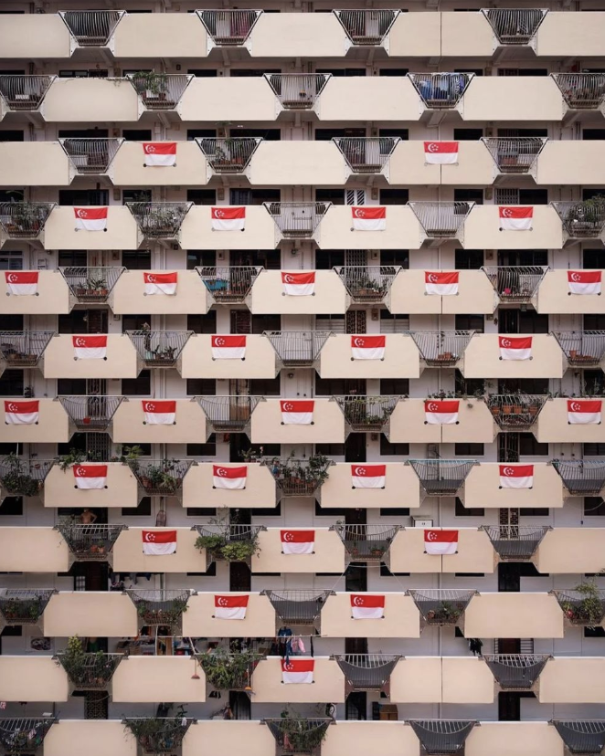
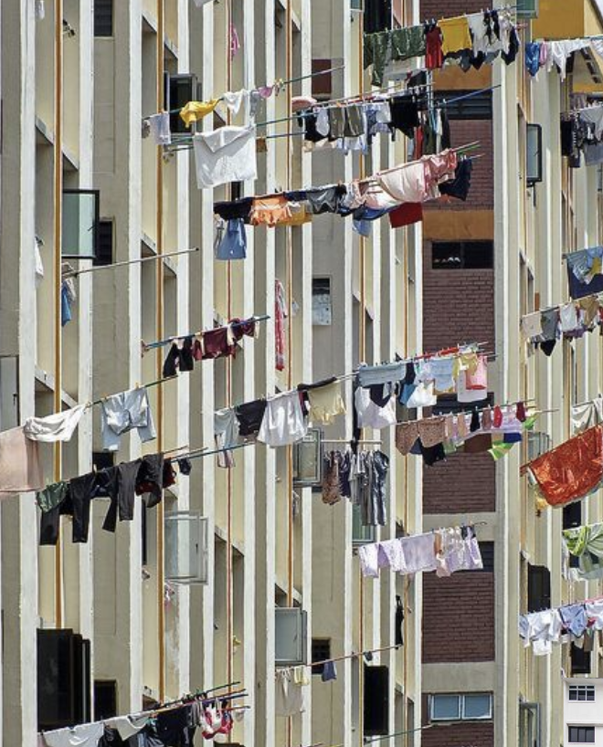
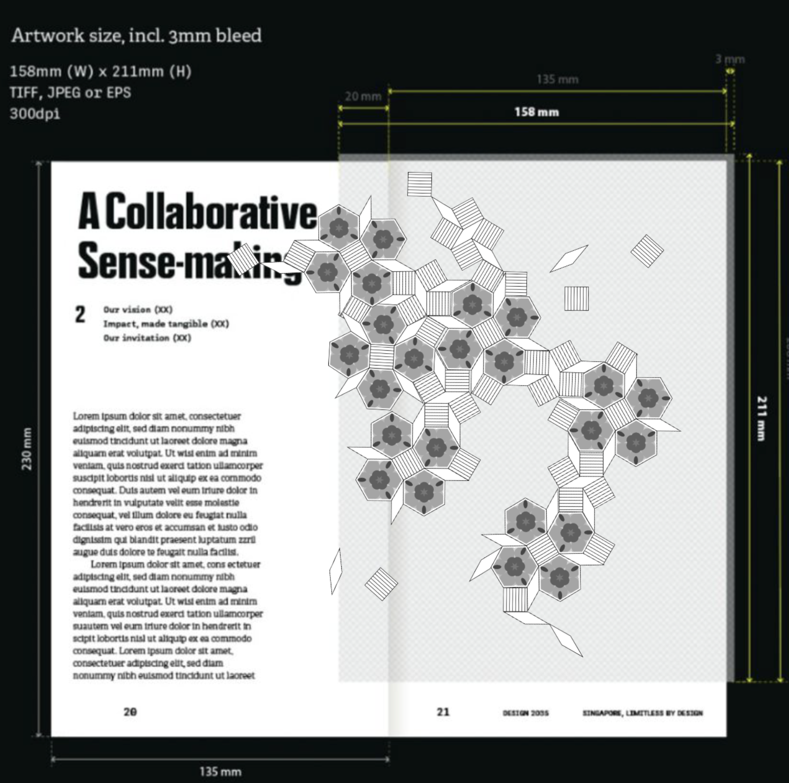
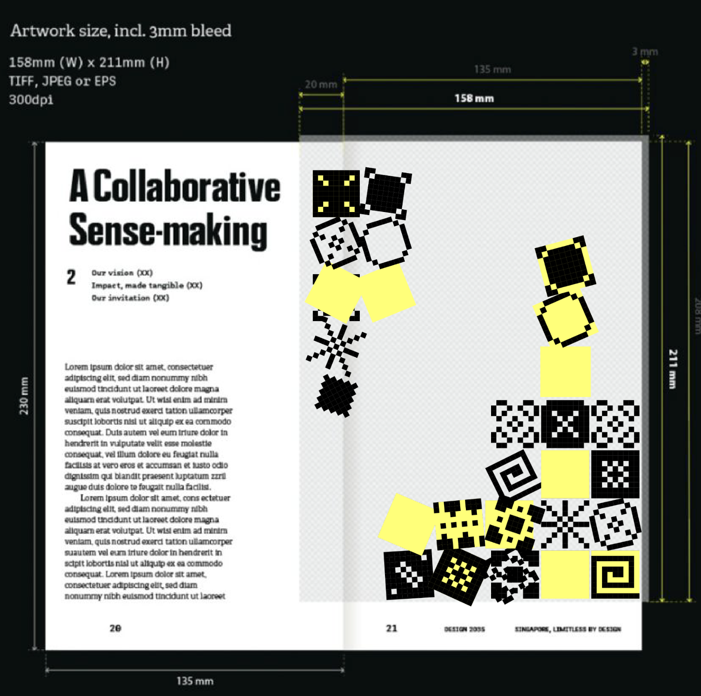
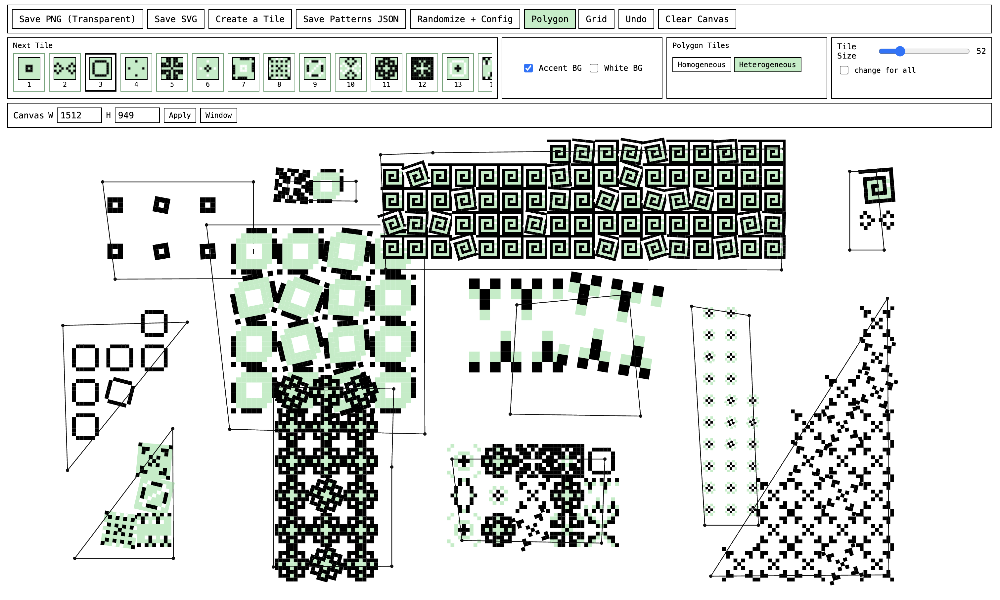
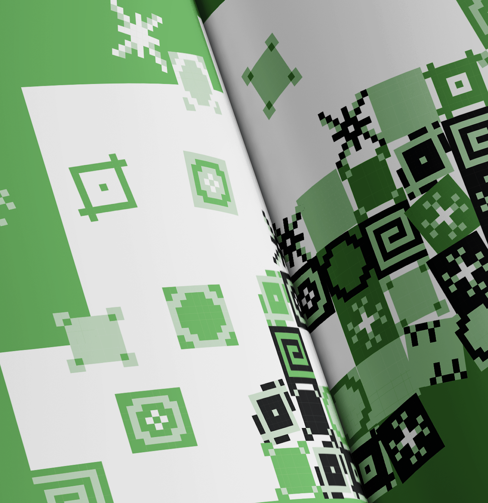

a collaborative sense-making
A custom web-based pattern-making tool exploring repetition and cultural identity in Singapore.
generative design,
creative coding,
visual systems
2026 / Commissioned by DesignSingapore Council

SINGAPORE: LIMITLESS BY DESIGN
I was invited to create an artwork for Singapore: Limitless by Design, DesignSingapore Council's fourth
Design Masterplan, which sets out a vision for the country's design industry from 2026 to 2035.
The brief was to respond to the idea of "limitless possibilities by design."
I started thinking about Singapore itself: a carefully planned city that still leaves room for very different
ways of living.
DESIGN 2035 MASTERPLAN→


STRUCTURES AND EVERYDAY LIFE
One of the first things that came to mind was Singapore's HDB flats.
There's something interesting about the repetition of these buildings. The windows, corridors and balconies
follow similar arrangements. Look closer and every home starts to differ: plants, laundry, decorations and
everyday adaptations interrupt the repetition.
I liked the tension between a shared structure and the many things that happen within it.
It made me wonder how a similar logic could apply to cultural patterns. A collection of individual motifs could
form something larger and hold onto their differences.


FROM MOTIFS TO MODULES
I began exploring cultural motifs as a collection of repeatable units.
I wanted to create a system where individual elements could shift into different compositions.
The idea was simple: a shared set of rules can create room for variation.


BUILDING A PATTERN-MAKING TOOL
To explore this, I built a custom web-based tool that allowed me to work with motifs as modular tiles.
I could experiment with scale, density and arrangement, gradually building larger compositions from smaller
units.
Building the tool became an important part of the process. I used the system to try things out, discover
unexpected combinations and develop the composition as I went along.

A COLLABORATIVE SENSE-MAKING
The final artwork brings these individual pattern units together into a shared composition.
Some motifs sit on their own. Others overlap and gather into denser clusters. The final composition keeps the
order of a grid, with a looser field of marks moving through it.
For me, this became a way of thinking about community in Singapore. Shared physical structures hold identities,
cultures and everyday lives that keep shifting the larger composition.
The artwork was created for the Design 2035 Masterplan, appearing in the publication as part of its visual
interpretation of Singapore's design future.

functionditi@gmail.com
© Aditi Neti 2026